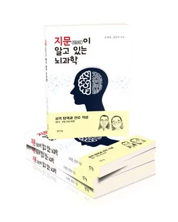

17년 임상 노하우와 뇌과학의 만남, 관계와 성향을 완벽하게 분석합니다.
이미지 기반 인지기능 체험으로 나와 가족의 뇌 특성을 이해하고, 더 나은 소통과 성장을 시작해 보세요.
고령사회 시대, 한국뇌심리연구소 부설 시니어인지건강센터
한국뇌심리연구소의 핵심 전문기관으로, 이미지 기반 뇌인지 진단 노하우를 시니어 세대에 맞춰 재설계한 인지건강 관리·인지훈련 프로그램을 운영합니다.
왜 시니어인지건강이 중요한가
고령사회 진입과 함께 치매·경도인지장애에 대한 조기 발견과 예방 교육의 수요가 빠르게 늘고 있습니다. 기억력·집중력·판단력 등 뇌기능을 정기적으로 점검하고 훈련하는 것이 인지건강 유지의 핵심입니다.
센터에서 제공하는 서비스
인지건강 관리 교육, 이미지 기반 인지훈련 프로그램, 뇌나이 검사, 시니어 전용 뇌성향 검사, 보호자·가족 대상 교육, 치매안심센터·복지관·요양시설 등 기관 출강 프로그램을 제공합니다.
대상
인지건강을 스스로 점검하고 싶은 어르신, 부모님의 인지건강이 걱정되는 가족, 치매안심센터·보건소·복지관·요양시설 등 시니어 대상 프로그램을 운영하는 기관 담당자.
기대효과
정기적인 인지기능 점검을 통한 조기 대응, 이미지 기반 훈련을 통한 뇌기능 활성화, 기관 차원의 표준화된 시니어 인지건강 교육 커리큘럼 확보.
기억력을 이해하면, 인지건강이 보입니다
나이가 들면서 기억력의 변화는 일상생활에서 가장 먼저 체감되는 인지기능 중 하나입니다. 자신의 현재 상태를 이해하고 꾸준히 점검하는 것이 인지건강 관리의 출발점이 될 수 있습니다.
정기적인 자가점검
이미지 기반 체험
교육적 피드백
한국뇌심리연구소 소장 임찬우
임찬우 소장
17년간 교육과 상담 현장에서 축적한 경험을 바탕으로 연구와 프로그램 개발을 지속하고 있습니다.
왜 한국뇌심리연구소인가?
이미지 기반 체험
문해력 영향 최소화
연령 맞춤 설계
교육적 피드백
결과의 직관적 시각화
교육 중심 프로그램
이런 분들이 함께하고 있습니다
핵심 솔루션: 독자 개발 4종 분석·체크 시스템
모두 임찬우 소장이 17년 임상 데이터를 바탕으로 독자 개발한 고유 분석 체계입니다.
뇌궁합 분석시스템
서로 다른 뇌 성향의 시너지를 분석하여 최적의 파트너십과 관계 개선 솔루션을 제공합니다. 궁합 지수와 상보성 모델을 기반으로, 갈등의 원인을 뇌 처리 방식의 차이에서 찾아냅니다.
뇌심리성향 검사시스템
좌뇌·우뇌·전뇌 활성화 수준 분석을 통해 개별 인지·심리 특성을 파악합니다. 21개 지표, 63장의 카드로 한 사람의 뇌심리 지형도를 정밀하게 그려냅니다.
뇌기반진로적성 탐색시스템
타고난 뇌 특성과 조절력을 바탕으로 최적의 진로 및 직무 적합성을 분석합니다. 23개 지표, 69장의 카드로 추천 직업군과 신중 접근이 필요한 직업군을 함께 제시합니다.
뇌컨디션 체크시스템
신경가소성 원리를 적용한 뇌 활성화 지수 및 뇌 나이를 측정하고, 맞춤형 뇌 트레이닝 가이드를 제공합니다. 번아웃과 컨디션 저하의 신호를 조기에 포착합니다.
본 분석·체크 서비스는 의료법상 질병의 의학적 진단이나 치료를 목적으로 하는 의료행위가 아니며, 개인의 성향·인지 상태·적성 탐색 및 뇌 활성화를 돕기 위한 교육·상담용 참고 도구입니다.
이미지로 확인하는 나의 뇌 성향
글이 아닌 이미지를 보고 직관적으로 선택하는 방식으로, 좌뇌·우뇌·전뇌의 인지 특성을 이해하도록 돕습니다. 현재 청소년·성인 대상 그림검사와 이미지 카드 프로그램을 운영 중이며, 연령별 버전을 순차적으로 안내해드릴 예정입니다.
연령에 맞춘 프로그램
모든 프로그램은 연령별 인지 특성을 고려하여 문항 수와 진행 방식이 다르게 설계되었습니다.
교육 및 강사 양성
검사 결과를 실제 상담과 교육 현장에서 활용할 수 있도록, 강사 양성 과정과 기관 대상 교육 프로그램을 운영합니다. 운영 중인 과정과 순차적으로 확대될 과정을 함께 안내합니다.
이용 절차
상담 신청부터 결과 리포트까지, 어떻게 진행되는지 미리 알려드립니다.
저서 및 연구
17년의 임상 경험과 뇌과학 연구가 담긴 저작들입니다.
임사부가 들려주는 32가지 인성교육

지문(指紋)이 알고 있는 뇌과학
학술적 · 과학적 검증 기반
"이미지 기반 진단 방식은 관계심리학·신경가소성 등 여러 이론적 배경을 참고해 개발되었습니다."
연구와 교육, 상담 현장에서 얻은 경험을 바탕으로 콘텐츠와 프로그램을 지속적으로 발전시키고 있습니다.
Winch (1958) 상보성 이론
Aron (1992) 자기확장 모델
Gottman (1994) 관계 기반 이론
Neuroplasticity 신경가소성
자주 묻는 질문
한국뇌심리연구소 개발 원칙
사람을 평가하거나 등급을 매기기 위한 검사가 아니라, 자신의 인지 특성을 이해하고 타인을 이해하도록 돕는 교육 프로그램을 만드는 것이 연구소의 가장 중요한 목표입니다.
우리는 사람을 판단하지 않습니다.
혼자 고민하지 마세요.
나와 가족을 이해하는 첫걸음을
한국뇌심리연구소가 함께합니다.
상담소 및 기관 제휴·도입 문의
센터 및 상담소에 '뇌분석·체크 시스템'을 도입하고 싶으신 원장님이나 제휴를 희망하시는 기관은 문의를 남겨주세요. 확인 후 순차적으로 안내드립니다.
FOLLOW US
SNS에서 더 자주 만나요
뇌과학 인사이트, 육아 꿀팁, 신간 소식을 가장 먼저 받아보세요